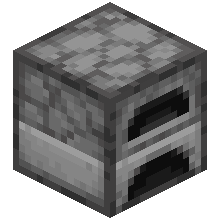
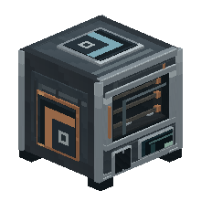
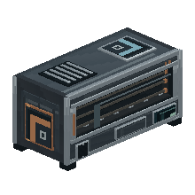
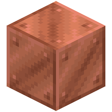
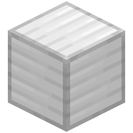
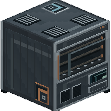

HomeLink Furnace 0.1.0
Four industriel à fusion parallèle, alimenté exclusivement par HomeLink Energy : aucun slot de combustible, aucune conversion. La chauffe, la production et le maintien au chaud consomment des HE depuis un buffer interne. Une coupure de courant met la progression en pause exacte et la reprend au retour de l’énergie.
CurseForge : publication en cours de validation.
Principe#
Le four industriel exécute plusieurs recettes de cuisson (fusion, cuisson, séchage) en parallèle sur un même bloc. Chaque palier augmente le nombre de jobs simultanés, le nombre de slots d’entrée, la vitesse de traitement et la capacité du buffer d’énergie. Le serveur fait autorité sur la progression ; l’XP des recettes terminées se récupère à la main (permission HomeCore CONTROL) : l’automatisation ne prend jamais l’XP.
Paliers#
| Palier | Structure | Jobs parallèles | Vitesse | Slots d’entrée | Buffer HE |
|---|---|---|---|---|---|
| Four industriel I | 1×1×1 | 2 | 1,0× | 9 | 2 000 HE |
| Four industriel II | 2×1×1 | 4 | 1,5× | 18 | 6 000 HE |
| Four industriel III | 2×2×2 | 8 | 2,0× | 27 | 16 000 HE |
Énergie#
Le four ne stocke que des HE (HomeLink Energy) : aucun slot de combustible. La durée d’une recette modifie son coût en énergie, pas la vitesse du palier. À l’arrêt, le buffer se recharge et les sorties restent accessibles ; un résultat terminé attend si la sortie est pleine. Reliez le four à une source Energy (panneaux, éoliennes, hydraulique, batteries) par câble cuivre.
Recettes#
Tous les paliers se fabriquent à la table vanilla. Chaque palier supérieur réutilise le four du palier précédent.
Icônes des blocs : rendu 3D de leur modèle, comme dans l’inventaire. Ingrédients : textures réelles du mod et de Minecraft.






Faces et automatisation#
| Face | Rôle |
|---|---|
| Dessus | Entrée des objets à traiter. |
| Arrière | Sortie des résultats. |
| Droite | Entrée d’énergie (HE). |
Les faces d’entrée/sortie permettent l’automatisation par entonnoirs ou conduits. Un verrou redstone (Ignorer / Signal requis / Absence de signal) et un bouton marche/arrêt pilotent la chauffe. Le four s’expose comme appareil HomeCore : il apparaît dans le Dashboard et se relie à un HomeNetwork avec le connecteur.
Galerie#
Captures en jeu. Cliquer pour agrandir.